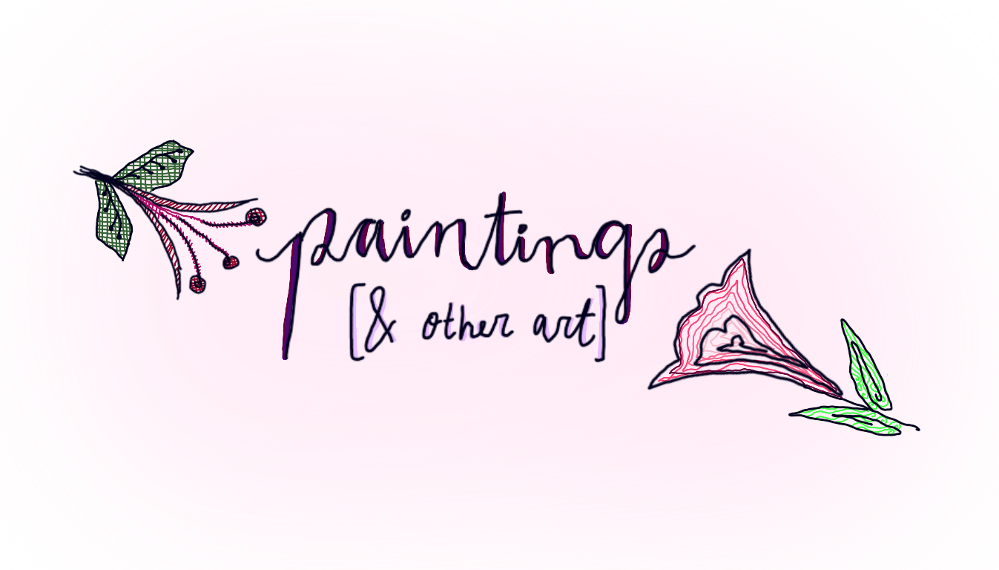

Art has always been an essential part of my life—a skill and passion I’ve nurtured for as long as I can remember. When I create, I enter a mindset that’s both peaceful and inspiring—it’s when I feel most like myself. Whether it’s spontaneous doodles in a notebook or detailed paintings that take hours to complete, art has always been my constant source of expression and grounding.
×
❮
❯